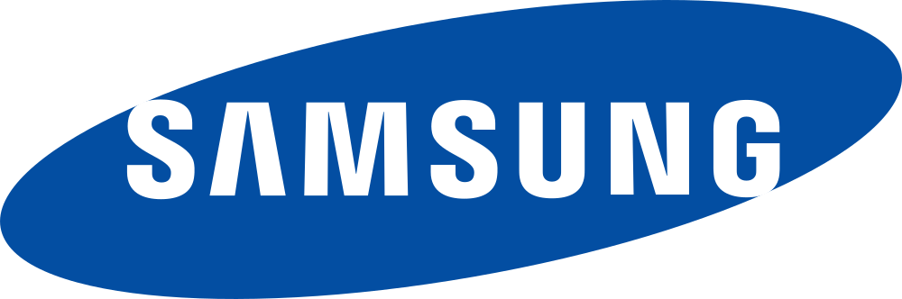
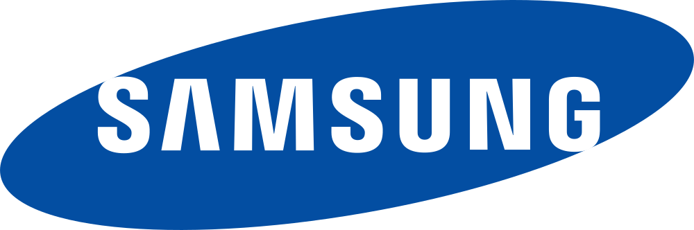
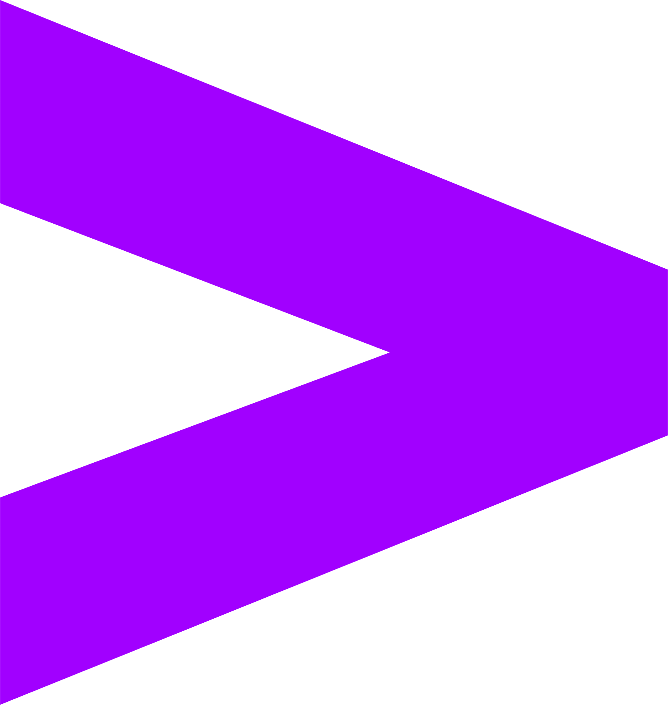
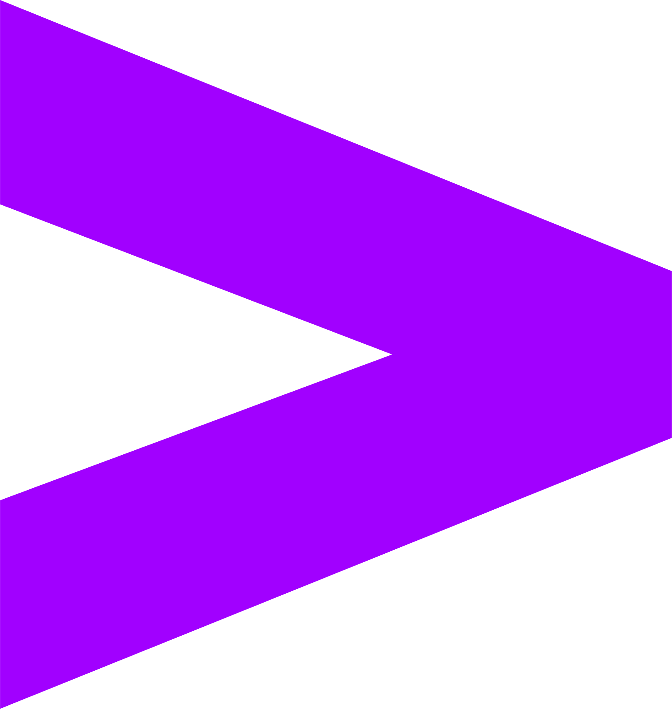

Criando idéias
Conectando o futuro
TECH CONNECT
INFORMAÇÃO
Palestrantes

Thiago
Henriques

Kauan
Gonzaga

Douglas
Almeida

Icaro
Vinicius

Miqueias
Regis

Luiz Felipe
Azevedo
Eventos passados


INSCRIÇÕES
O que fazer agora?
-
Verifique a sua caixa de e-mail!
Verifique o e-mail de confirmação que acabamos de enviar. Se não encontrar, dê uma olhada também na pasta de spam ou lixo eletrônico.
-
Acesse o link do participante:
No e-mail, você encontrará um link exclusivo para acessar o evento e materiais adicionais. Guarde bem!
-
Siga-nos nas redes sociais:
Fique por dentro das novidades e atualizações do evento.

 

 

O que dizem sobre o evento
"Muito bom os ensinamentos passados, a palestra sobre microserviços realmente agregou muito para meus conhecimentos e para os projetos que desenvolvo na empresa."
Matheus Vianna
"A organização foi impecável! Desde o credenciamento até o coffee break. O conteúdo das trilhas de IA e Cloud estava extremamente relevante. Com certeza voltarei em 2026!"
Juliana Ribeiro
"Uma oportunidade fantástica de networking. Conheci profissionais incríveis e as discussões nos painéis foram de altíssimo nível. Recomendo a todos da área de tecnologia."
Roberto Alves